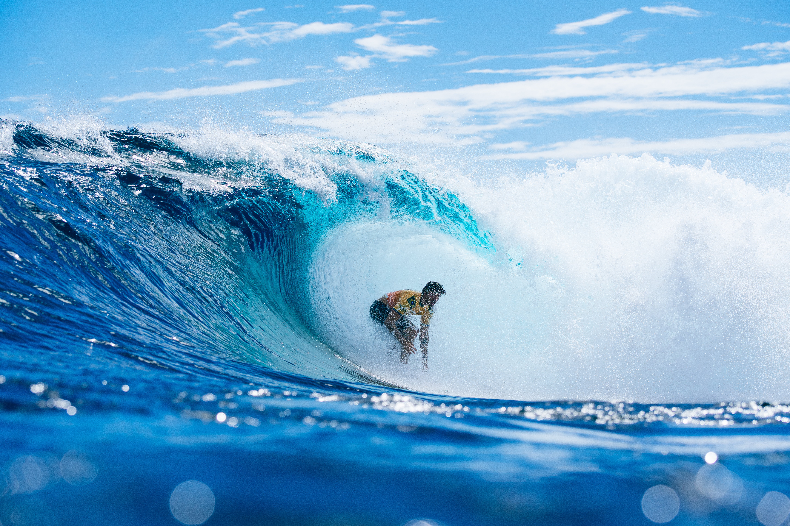

O terceiro dia da WSL Filipinas 2026, transformou o Philippines Pro em um dos capítulos mais importantes da reta final do Circuito Mundial de Surfe. Nas ondas de Cloud 9, na ilha de Siargao, o Brasil garantiu dois representantes nas semifinais masculinas, mas também sofreu eliminações importantes. Yago Dora e Gabriel Medina avançaram e passaram a protagonizar um confronto brasileiro por uma vaga na decisão.
A competição teve baterias de alto nível técnico, tubos profundos, aéreos decisivos e mudanças importantes no cenário em busca do título mundial. Yago Dora apresentou uma das atuações mais expressivas do campeonato, Gabriel Medina conseguiu uma virada nos minutos finais contra George Pittar, enquanto Filipe Toledo acabou superado pelo australiano Ethan Ewing em uma das disputas mais fortes do evento.
No feminino, a brasileira Luana Silva encerrou sua participação nas quartas de final diante da pentacampeã mundial Carissa Moore. A maior surpresa, porém, foi a eliminação da australiana Molly Picklum, líder do ranking feminino, derrotada por Isabella Nichols em uma bateria que demonstrou como as condições exigentes de Cloud 9 podem mudar completamente o rumo de uma bateria.
A terceira jornada deu sequência às disputas que movimentaram o segundo dia, marcado por classificações importantes, eliminações brasileiras e pelo destaque dos surfistas locais.
Yago Dora brilha com nota quase perfeita
O brasileiro, campeão mundial de 2025 e líder do ranking masculino, disputou duas baterias e mostrou capacidade de adaptação às ondas tubulares de Cloud 9.
Nas oitavas de final, enfrentou Connor O'Leary, representante do Japão, e precisou de uma reação para conquistar a classificação. Dora conseguiu a virada em sua última onda e venceu por 14,00 a 12,14, garantindo presença entre os oito melhores da etapa.
Veja os melhores momentos da bateria abaixo:
Nas quartas, diante de Kanoa Igarashi, o brasileiro elevou o nível da sua apresentação.
Yago encontrou um tubo profundo de backside, conseguiu atravessar uma seção exigente da onda e completou a apresentação com um aéreo. A combinação gerou 9,87 pontos, uma das maiores notas da competição.
O brasileiro ainda acrescentou uma onda de 7,50 pontos e terminou com 17,37 no somatório. Igarashi, mesmo sendo um adversário experiente em ondas tubulares, alcançou apenas 9,60 pontos, com notas 4,93 e 4,67.
A atuação consolidou Yago entre os quatro semifinalistas e reforçou seu excelente momento técnico. Mais do que a classificação, a bateria mostrou a capacidade do brasileiro de combinar leitura de tubos, velocidade e manobras progressivas nas condições exigentes do pico filipino.
Veja os melhores momentos da bateria abaixo:
Gabriel Medina consegue virada nos minutos finais
Nas oitavas de final, o tricampeão mundial enfrentou o australiano Liam O'Brien em uma das disputas mais equilibradas da rodada. Medina venceu por 15,23 a 14,50, resultado que garantiu sua classificação às quartas.
Veja os melhores momentos da bateria abaixo:
Na sequência, encontrou George Pittar, outro australiano que vinha de vitória sobre o italiano Leonardo Fioravanti por 14,63 a 13,83.
A bateria entre Medina e Pittar foi definida nos minutos finais.
Com aproximadamente dois minutos restantes, Medina estava atrás no placar e precisava de uma onda para mudar o resultado. O brasileiro encontrou uma seção favorável para executar um aéreo, realizou a rotação e conseguiu concluir a manobra mesmo depois de uma aterrissagem complicada.
Os juízes atribuíram nota 7,00 à onda, suficiente para garantir a virada.
Medina terminou com 12,33 pontos, somando 7,00 e 5,33, enquanto Pittar ficou com 9,17, resultado de ondas avaliadas em 6,50 e 2,67.
A classificação colocou Medina em sua sexta semifinal na temporada de 2026 e estabeleceu um confronto brasileiro contra Yago Dora.
Veja os melhores momentos da bateria abaixo:
O duelo ganhou importância adicional pelo contexto da corrida pelo título mundial. Yago chegou às Filipinas como líder do ranking, enquanto Medina permaneceu entre os principais concorrentes na reta final do campeonato.
Filipe Toledo faz nota 9,43, mas acaba eliminado
O bicampeão mundial começou o terceiro dia enfrentando Griffin Colapinto, dos Estados Unidos, nas oitavas de final. Depois de uma bateria competitiva, Toledo conquistou a classificação com vitória por 14,00 a 12,33.
Veja os melhores momentos da bateria abaixo:
Nas quartas de final, porém, encontrou um dos adversários mais inspirados do dia: Ethan Ewing.
O australiano começou forte e conseguiu uma onda de 8,00 pontos, combinando passagem por um tubo com manobras na parede da onda.
Toledo respondeu apostando em seu repertório aéreo. Depois de algumas tentativas sem sucesso, completou um alley-oop que recebeu nota 9,43.
O brasileiro acrescentou 5,50 pontos em outra onda e assumiu momentaneamente a liderança.
Ewing, entretanto, conseguiu uma resposta ainda mais decisiva. O australiano entrou em um tubo, completou uma sequência de manobras e finalizou com um aéreo reverso, recebendo 9,17 pontos.
Com isso, fechou a bateria com 17,17 pontos, contra 14,93 de Toledo.
A eliminação encerrou a participação de Filipe na etapa filipina, mas deixou uma das baterias de maior qualidade técnica do terceiro dia.
Veja os melhores momentos da bateria abaixo:
Luana Silva cai nas quartas de final
No feminino, a participação brasileira terminou no terceiro dia do Philippines Pro.
Luana Silva chegou às quartas de final depois de superar a havaiana Bettylou Sakura Johnson na rodada inicial, disputada no dia anterior.
Na busca por uma vaga na semifinal, encontrou Carissa Moore, pentacampeã mundial e uma das surfistas mais experientes do circuito.
Moore controlou a disputa e venceu por 13,57 a 7,83, eliminando a brasileira.
O resultado colocou a havaiana entre as quatro melhores da etapa e encerrou a campanha de Luana com uma participação nas quartas de final.
Veja os melhores momentos da bateria abaixo:
Isabella Nichols elimina a líder mundial
A principal surpresa da competição feminina foi a derrota de Molly Picklum.
A australiana chegou às Filipinas na liderança do ranking mundial e enfrentou sua compatriota Isabella Nichols, que disputava o evento depois de um período afastada por lesão no tornozelo.
Nichols protagonizou uma das melhores atuações femininas do terceiro dia.
A surfista conseguiu atravessar um tubo profundo e recebeu nota 8,17. Posteriormente, encontrou outra onda tubular que valeu 5,33 pontos, estabelecendo um somatório de 13,50.
Picklum enfrentou dificuldades para completar suas ondas e terminou com apenas 2,57 pontos.
A vitória por 13,50 a 2,57 garantiu Nichols na semifinal e interrompeu a campanha da líder mundial.
O resultado teve um peso importante na disputa feminina do campeonato, já que Picklum deixou de avançar às fases de maior pontuação da etapa.
Nichols, por sua vez, transformou o retorno às competições em uma campanha expressiva, chegando entre as quatro melhores em uma etapa disputada em condições exigentes.
Caitlin Simmers e Tyler Wright completam as semifinais femininas
Simmers enfrentou Yolanda Hopkins, de Portugal, e venceu por 10,34 a 8,33. A norte-americana chegou a sofrer uma penalização por interferência, mas conseguiu manter a vantagem necessária para avançar.
Tyler Wright, por sua vez, superou a espanhola Nadia Erostarbe por 13,67 a 7,93.
A eliminação de Molly Picklum e a permanência de Carissa Moore e Caitlin Simmers deram uma nova configuração à disputa pelas primeiras posições da etapa.
Surfistas filipinos se despedem após campanha histórica
O terceiro dia também marcou o fim da participação dos representantes locais que ainda permaneciam na chave masculina.
John Mark Tokong e Jayuard Alciso haviam protagonizado duas grandes surpresas na rodada inicial, eliminando, respectivamente, o brasileiro Samuel Pupo e o francês Kauli Vaast, campeão olímpico em Paris 2024.
Tokong foi superado por Ethan Ewing por 14,50 a 11,54, enquanto Alciso perdeu para Kanoa Igarashi por 12,90 a 11,84.
As eliminações encerraram a participação filipina na competição, mas não diminuíram a importância dos resultados alcançados.
Competindo como convidados da organização, Tokong e Alciso conseguiram vencer adversários de destaque internacional na primeira edição de uma etapa da elite mundial realizada em Cloud 9.
A passagem dos dois surfistas tornou a competição especialmente significativa para o desenvolvimento e a visibilidade do surfe nas Filipinas.
Resultados completos
O terceiro dia teve seis baterias das oitavas de final masculinas, quatro quartas de final masculinas e quatro quartas de final femininas.
Oitavas de final masculinas:
- Filipe Toledo 14,00 x 12,33 Griffin Colapinto
- Ethan Ewing 14,50 x 11,54 John Mark Tokong
- Yago Dora 14,00 x 12,14 Connor O'Leary
- Kanoa Igarashi 12,90 x 11,84 Jayuard Alciso
- Gabriel Medina 15,23 x 14,50 Liam O'Brien
- George Pittar 14,63 x 13,83 Leonardo Fioravanti
Quartas de final masculinas:
- Jack Robinson 14,17 x 10,50 Seth Moniz
- Ethan Ewing 17,17 x 14,93 Filipe Toledo
- Yago Dora 17,37 x 9,60 Kanoa Igarashi
- Gabriel Medina 12,33 x 9,17 George Pittar
Quartas de final femininas:
- Caitlin Simmers 10,34 x 8,33 Yolanda Hopkins
- Carissa Moore 13,57 x 7,83 Luana Silva
- Isabella Nichols 13,50 x 2,57 Molly Picklum
- Tyler Wright 13,67 x 7,93 Nadia Erostarbe
Semifinais definidas no Philippines Pro
No masculino, Jack Robinson enfrenta Ethan Ewing em uma semifinal totalmente australiana. Na outra chave, Yago Dora e Gabriel Medina disputam uma vaga brasileira na decisão.
No feminino, Caitlin Simmers tem pela frente Carissa Moore, enquanto Isabella Nichols enfrenta Tyler Wright.
Próxima chamada e Finals Day da WSL Filipinas 2026
A próxima chamada do Philippines Pro está prevista para terça-feira, 3 de novembro, às 8h30 no horário local das Filipinas, equivalente às 21h30 de segunda-feira, 2 de novembro, pelo horário de Brasília. Caso as condições do mar sejam favoráveis, o início das baterias está previsto para 9h05 nas Filipinas, correspondentes às 22h05 no Brasil.
Com as quartas de final concluídas, o campeonato chegou à fase decisiva e está pronto para o Finals Day, que reunirá as semifinais e finais masculinas e femininas.
A expectativa é de que as últimas baterias possam ser realizadas em 3 de novembro, mas a confirmação depende da avaliação das condições do mar e da decisão da direção de prova da World Surf League.
A janela oficial da competição permanece aberta até 10 de novembro de 2026, permitindo que a organização utilize os dias disponíveis para concluir o campeonato caso as condições não sejam adequadas.
Os confrontos decisivos poderão ser acompanhados ao vivo pelos canais oficiais da WSL, incluindo o site e o aplicativo da entidade. A programação definitiva dependerá da chamada da organização em Cloud 9.
Por que o terceiro dia foi tão importante
O Philippines Pro integra a reta final do Championship Tour de 2026 como a 11ª das 12 etapas da temporada, colocando o desempenho dos atletas sob pressão adicional na disputa pelo título mundial.
A passagem por Cloud 9 também trouxe um desafio específico. Conhecida pelas direitas tubulares que quebram sobre uma bancada de recife, a onda exige posicionamento preciso, escolha cuidadosa das séries e controle técnico durante a passagem pelos tubos.
No terceiro dia, as condições permitiram disputas de alto nível, com ondas de aproximadamente quatro a seis pés segundo a cobertura da competição.
A diferença entre os estilos ficou evidente. Yago Dora conseguiu combinar tubos e aéreos para construir uma das maiores pontuações da jornada. Gabriel Medina utilizou seu repertório de manobras progressivas para conquistar uma virada decisiva. Ethan Ewing mostrou eficiência ao combinar tubos e curvas de potência.
No feminino, Isabella Nichols demonstrou como a escolha das ondas pode ser determinante em Cloud 9, aproveitando oportunidades que sua adversária não conseguiu transformar em boas pontuações.
Esses desempenhos tornaram a terceira jornada um retrato das exigências do surfe de competição: não basta ter repertório técnico, é necessário escolher as ondas certas e executar as manobras nos momentos decisivos.
A competição mostrou que Cloud 9 pode oferecer um cenário exigente mesmo para campeões mundiais experientes. Em baterias decididas por escolhas de ondas, tubos profundos e manobras de alto risco, pequenos detalhes fizeram a diferença entre avançar e ser eliminado.
Ao fim do terceiro dia, o Philippines Pro já havia produzido alguns dos momentos mais marcantes da reta final do Circuito Mundial de 2026, com Yago Dora e Gabriel Medina preparados para um confronto brasileiro que se tornou um dos principais atrativos da fase decisiva.